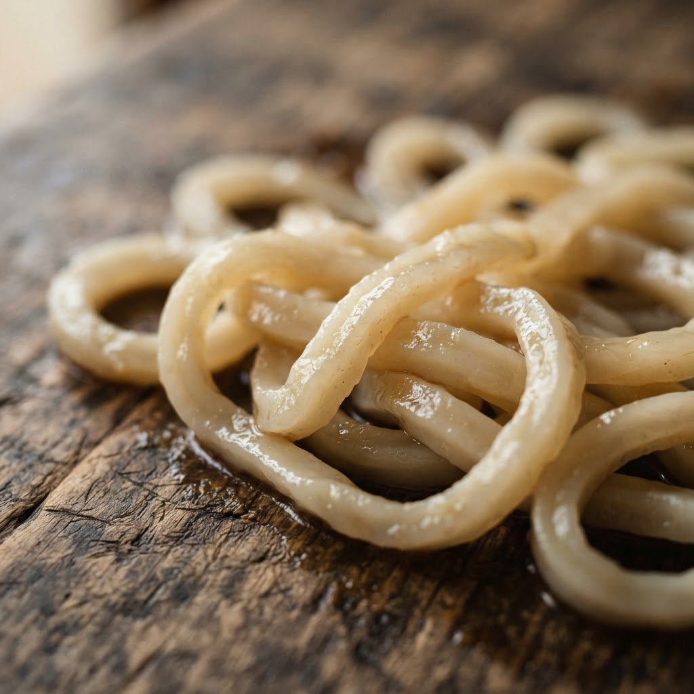
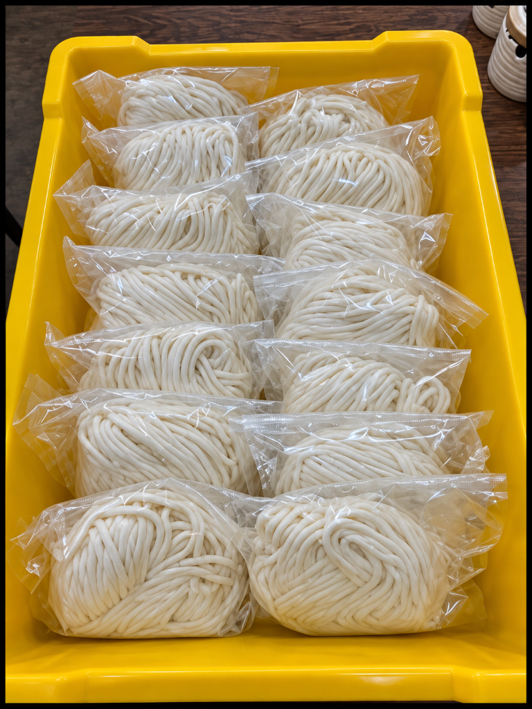
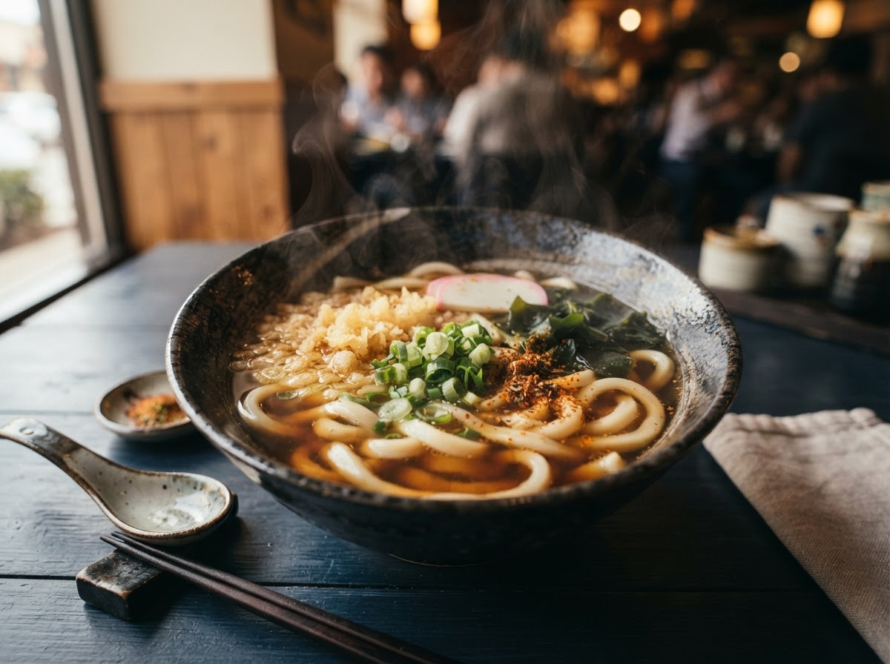
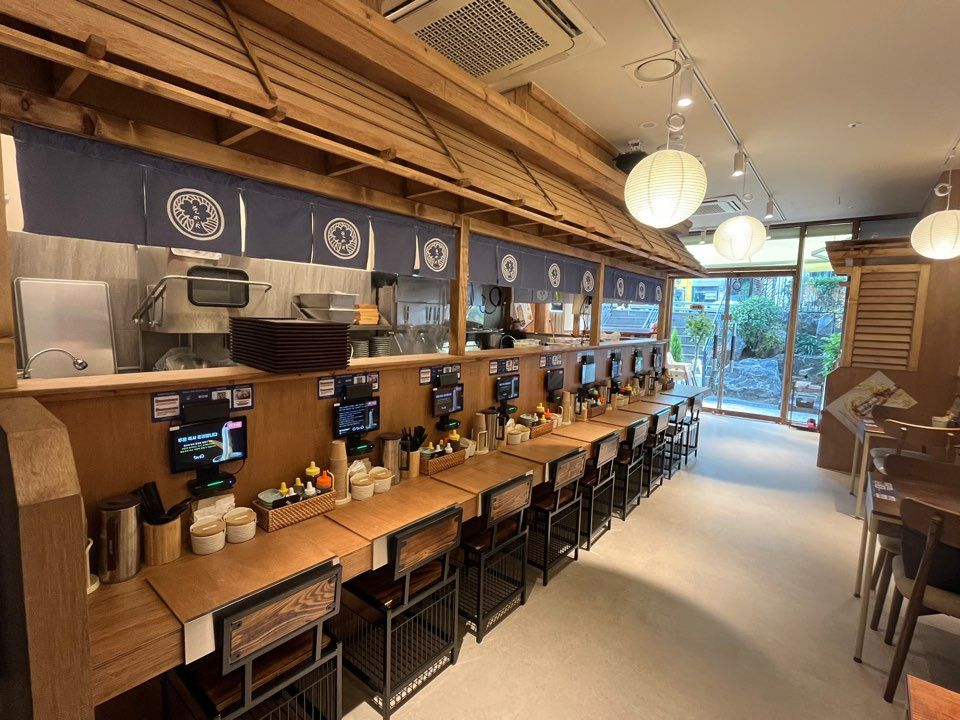
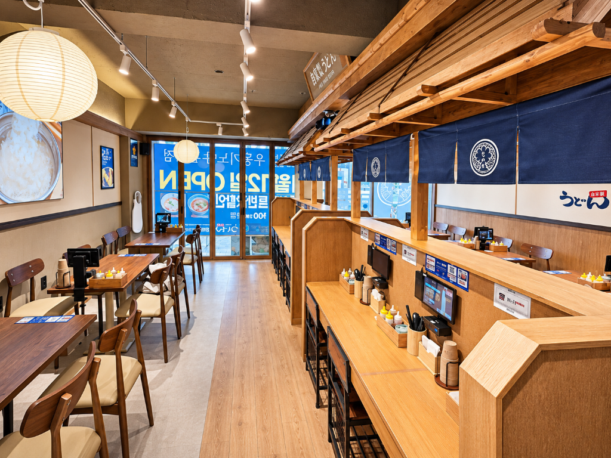

메뉴 수보다 면 한 가닥의 완성도
계절과 습도에 따라 미묘하게 달라지는 수분율과 염도를 매일 점검합니다. 면발 자체가 맛있어야 차가운 붓카케도, 따뜻한 카케도 비로소 완성됩니다.
木ノ屋 · 四十八時間低温熟成生麺
물, 소금, 밀가루. 가장 단순한 세 가지 재료에 48시간의 기다림을 더했습니다. 한 그릇의 우동이 식사를 넘어 오래 기억되는 경험이 되도록, 우동키노야는 오늘도 면의 밀도에 집중합니다.
一杯への信念
구리 골목의 작은 우동집에서 출발한 우동키노야는 오픈 직후부터 긴 줄이 이어지는 매장이 되었습니다. 비결은 메뉴 가짓수를 늘리는 대신 우동의 본질인 ‘면’ 하나를 끝까지 파고든 고집에 있습니다.
계절과 습도에 따라 미묘하게 달라지는 수분율과 염도를 매일 점검합니다. 면발 자체가 맛있어야 차가운 붓카케도, 따뜻한 카케도 비로소 완성됩니다.
단단하기만 한 면이 아니라 겉은 매끄럽고 속은 쫀득하게 살아 있는 사누키 정통 식감을 구현하기 위해 13개월간 배합과 숙성 온도를 연구했습니다.
30cm 통장어튀김, 촉촉한 닭다리살 토리텐, 바삭한 새우·단호박 튀김과 감칠맛 깊은 특제 쯔유·카케 육수가 숙성면의 풍미를 배가시킵니다.
熟成の技 · 四段階の工程
자가제면 방식 그대로 매일 반죽하고, 48시간 저온에서 천천히 숨 쉬게 한 뒤, 가장 맛있는 온도로 삶아냅니다.

엄선한 전용 소맥분에 정제염수를 더해 글루텐 그물망이 가장 촘촘하게 형성되도록 치대어 반죽합니다.

저온 숙성고에서 48시간 동안 수분이 반죽 깊숙이 고르게 퍼지며 소화는 편하고 탄력은 극대화된 생면으로 거듭납니다.

일반 우동면보다 훨씬 긴 약 80cm 길이로 제면하여 후루룩 빨아들일 때 입안 가득 탱글한 면발의 리듬감을 선사합니다.

대형 가마에서 정확히 삶아낸 면을 찬물에 강하게 비벼 씻어내어 표면은 투명하게 빛나고 중심부는 묵직한 코어를 완성합니다.
美味しい召し上がり方
쯔유를 붓거나 국물을 섞기 전, 갓 건져 올린 면 한 가닥만 먼저 씹어보세요. 밀의 은은한 단맛과 48시간 숙성이 만든 쫀득한 저항감을 가장 선명하게 느끼실 수 있습니다.
붓카케우동에는 신선한 레몬을 살짝 짜 넣고 갈아낸 무(무오로시), 생강, 쪽파를 가볍게 비벼 드세요. 진한 쯔유에 산뜻한 산미가 더해져 마지막 한 입까지 깔끔합니다.
30cm 장어튀김이나 토리텐은 먼저 바삭한 튀김옷 그대로 맛보신 뒤, 남은 절반은 쯔유나 따뜻한 국물에 살짝 적셔 촉촉해진 풍미로 즐겨보세요.
空間の美 · DINING SPACE
일본 정통 우동 공방의 단정한 목재 톤과 남색 노렌(暖簾), 온전히 한 그릇에 집중할 수 있는 다찌석과 여유로운 테이블석을 갖추고 있습니다.



全国の店舗案内
서울부터 제주까지 전국 51개 매장에서 동일한 48시간 저온숙성 생면으로 고객님을 맞이합니다.
ブランドニュース
신규 매장 오픈과 시즌 메뉴, 브랜드의 새로운 발걸음을 전해드립니다.
お客様の声 · 제휴 문의
매장 이용 후기, 칭찬·제안, 브랜드 협업 및 제휴 문의를 남겨주시면 담당 부서(`udonkinoya@daum.net`)에서 확인 후 정성껏 답변드립니다.
담당 부서 확인 후 남겨주신 연락처로 신속히 안내드리겠습니다.